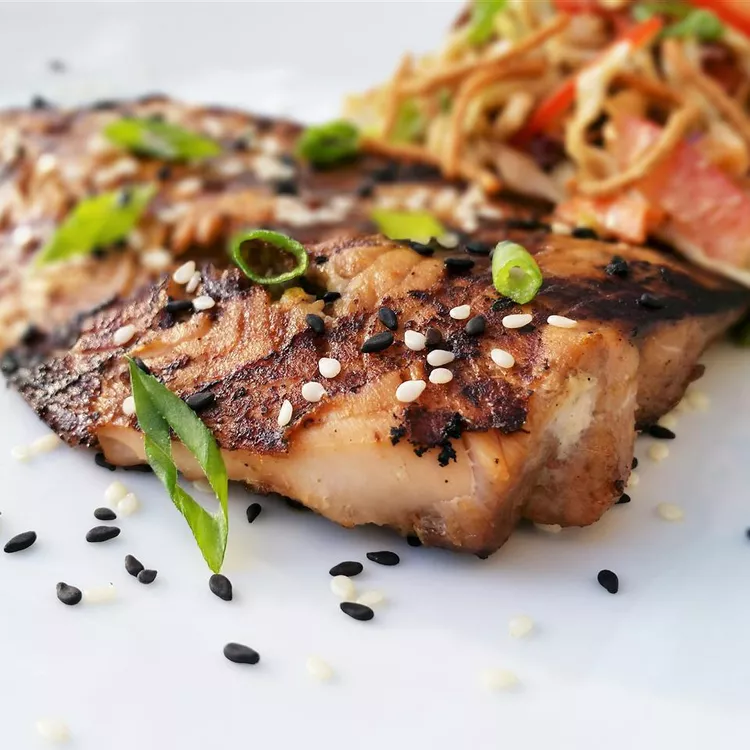

Sesame Grilled Salmon

Description
Savor the flavor with this grilled sesame salmon! It's a tasty main course
that's even better when paired with grilled yellow bell peppers, green
beans, and herbed wild rice.
Ingredients
- 1⁄4 cup light soy sauce
- 1 1⁄2 tablespoons honey
- 1 tablespoon grated fresh ginger
- 1 clove garlic, minced
- 1 pound salmon fillets
- 1 teaspoon sesame oil
- 2 teaspoons sesame seeds
Steps
-
Whisk soy sauce, honey, ginger, and garlic together in a bowl until
marinade is evenly mixed. Set aside 1⁄4
-
Place salmon fillets in a shallow dish; pour the remaining marinade over
the salmon. Cover dish with plastic wrap and refrigerate for 5 minutes.
- Heat sesame oil in a large skillet over medium-high heat.
-
Remove salmon from marinade, shaking to remove excess marinade, and
place, skin-side up, into the hot oil; cook for 4 minutes. Discard
unused marinade in the shallow dish. Flip salmon and drizzle the
reserved marinade over salmon; sprinkle with sesame seeds.
-
Cook until fish flakes easily with a fork, 5 to 7 minutes. Flip salmon,
remove skin, and cook 1 minute more.